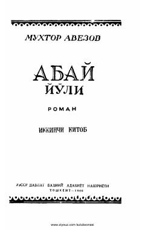

AYBuyuk qozoq shoiri Abay Qo'nonboyev hayoti haqidagi mashhur epopeyaning ikkinchi qismi.
Muxtor Avezovning mashhur 'Abay yo'li' epopeyasining ikkinchi kitobi. Ushbu asarda qozoq xalqining buyuk shoiri va mutafakkiri Abay Qo'nonboyev hayoti va o'sha davrdagi ijtimoiy-tarixiy jarayonlar badiiy tasvirlangan.